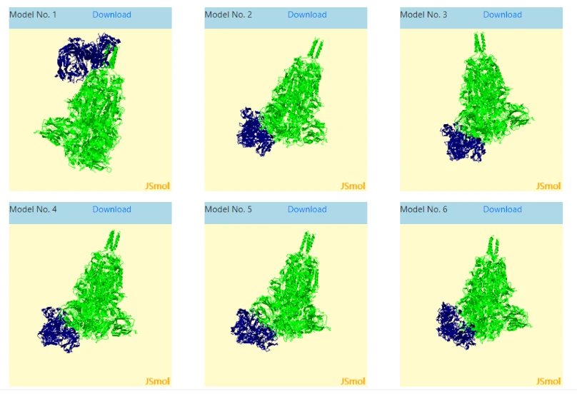
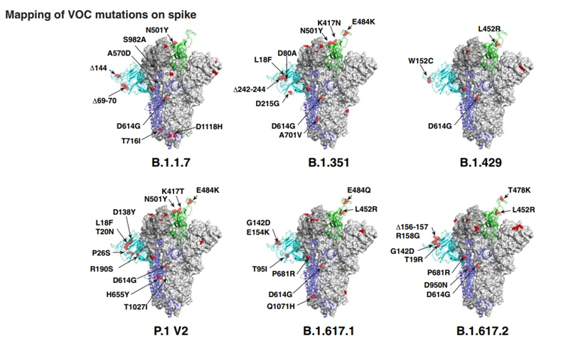
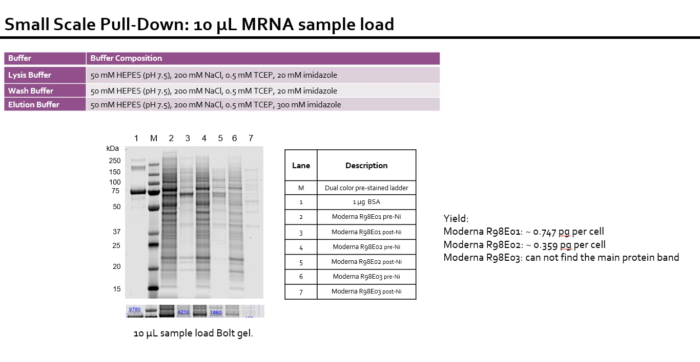

Context
With a background spanning computational biology and biochemistry, I joined Curia's AI-antibody design effort. The program combined AI-generated antibody designs with CADD evaluation and experimental expression testing.
My role covered the bridge between model and molecule: background research, workflow design, data collection and organization, train/test splitting, computational evaluation, and mRNA antibody expression tests.
What I did
- Researched the antibody-design landscape and helped define the workflow.
- Collected, organized, and split sequence and structure data for model training and testing.
- Evaluated AI-designed antibodies with CADD and structural methods.
- Ran antibody mRNA expression tests in collaboration with the Moderna team.
Key results
- Workflow stages
- 6Data to expression
- Design + evaluation
- AI + CADDIntegrated loop
- Expression format
- mRNAAntibody expression test
- Built an integrated AI → CADD → expression workflow for antibody design.
- Connected computational candidate ranking to experimental expression readouts.
- Supported a cross-functional team spanning AI, CADD, antibody biology, and mRNA expression.
Figures



Collaborators
Curia AI & CADD teams
Computational design and evaluation
Curia Global
mRNA antibody team
mRNA expression collaboration
Moderna
Output
No public artifact for this project yet. Summary adapted from the research presentation.
Source and disclosure. High-level summary from Dr. Zheng's April 2024 research summary. AI models, client sequences, and expression data are not reproduced; confirm Curia and Moderna disclosure permissions before reuse.